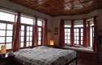
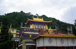

Trip Overview
India Untravelled invites you on a most exclusive journey to discover the majesty of the Indian Himalayas. Indulge yourself in the old-fashioned luxury of heritage homestays, overwhelm your senses with the smell of the old teak that is still alive in these homes, take a walk in an apple orchard or a tea estate, pamper your taste buds with sumptuous dishes that combine Anglo and Indian cooking, and relive the long-forgotten memories of India’s Himalayan heritage. On this trail, you only need to walk to the balcony of your homestays, to rejuvenate amid the dramatic backdrop of the snow-capped Himalayas.
This itinerary lets you stay in offbeat locations, not too far from the popular Himalayan circuit of Shimla–Manali–Dharamsala–Chandigarh, yet far enough to let you soak in the quaint countryside and experience the hospitality of host families.
The Homestays in the Himalayas itinerary starts in an artistic homestay in a quiet neighborhood of Shimla, and continues at a heritage British villa located among apple and kiwi orchards in the picturesque village cluster of Raison. You unwind at a 150-year-old tea estate in the charming Kangra valley, and end your journey by the banks of the Sutlej River, in one of Punjab’s last standing imperial forts.
Each of these homestays has a fascinating story steeped in history, and offers indulgent comfort and luxury befitting royalty. Each homestay gives you the chance to interact closely with your hosts and get an intimate peak into the life of the region.
Please email us at untravel@indiauntravelled.com to plan and book your travels.
Trip Highlights
The Homestays in the Himalayas trail allows you to combine unique experiences suited to your preferences.
You can relax and rejuvenate, read a book in a peaceful setting by the mighty Himalayas, stroll along the River Beas, and spend hours in conversation with your hosts. You can volunteer in the host kitchen, or try your hand at plucking tea or pruning apple orchards.
Adventure enthusiasts can hike or trek through the mountains, paraglide along Kangra’s finest paragliding site, river raft in the waters of the Sutlej or Beas, or ride a snow scooter along the glacial Rohtang Pass.
Nature lovers can ride the toy train, deemed a UNESCO World Heritage Site, literally through the slopes of the Himalayas and a whopping 103 tunnels, walk and trek along the varied countryside, and explore the colorful flora and fauna of the mountains.
Culture seekers can catch a close glimpse of Himachal’s village life, participate in local festivals and traditions, and visit ancient temples and Buddhish monasteries, including the temple of His Holiness the Dalai Lama.
Please email us at untravel@indiauntravelled.com to plan and book your travels.
Brief Itinerary
Day 1: Travel to Shimla.
The Homestays in the Himalayas itinerary can start in Delhi, which offers several international flight connections, or in Chandigarh, which is well connected by domestic carriers and trains. From Delhi or Chandigarh, you can proceed by train or car to Kalka. We recommend that you take the Himalayan Queen Toy Train from Kalka to Shimla. Deemed a UNESCO World Heritage Site, this toy train ride takes you literally through the Himalayas and a whopping 103 tunnels, along stunning mountain landscapes, past small waterfalls, and amid lush green forests of pine, oak and rhododendron.
Days 2 & 3: Day trips around Shimla
Spend the next two days getting to know your host family, indulging in delicious home-cooked food, and partaking of the famous Indian hospitality. Spend some quiet time in the attic of the house or lounging on the terrace, watching the clouds flirt with the Himalayas.
Explore the hill slopes and architectural delights of Shimla on foot. You could choose to shop to your heart’s delight at the famous Mall road, an hour’s walk from your homestay, visit small towns on the Hindustan Tibet Road, tee off at the picturesque Naldehra golf course, river raft in the waters of the Sutlej River, and hike or trek in the surrounding mountain trails, while soaking in the panaromic views that constantly keep you company.
Day 4: Travel to Raison (near Manali).
Leave Shimla in the morning for Raison, a scenic village cluster near Manali, located on the banks of the River Beas, and surrounded on all sides by the spectacular Dhauladhar Range.
Your second homestay is a quaint British heritage villa, surrounded by apple orchards and kiwi plantations, overlooking the River Beas below and the Himalayas above, where the apple barons of the region will be your hosts.
Days 5 & 6: Day trips around Raison & Manali.
Spend the next two days interacting with your host family, picnicking among apple orchards, walking down to the River Beas, and participating in local folk performances or unearthing local legends by a bonfire.
You can choose to explore the stone architecture of the region, hike or trek in the surrounding countryside trails, visit ancient monasteries and temples in nearby towns, and indulge in adventure activities like trout fishing, paragliding and snow skiing.
Day 7: Travel to Darang (near Dharamsala).
Leave the next morning for a beautiful tea estate in the charming Kangra valley of the Himalayas, dating back atleast 150 years. Explore Himachal’s farm culture in this quaint village, and soak in majestic views of the snow-capped Himalayas.
Your next homestay is at a quaint, tastefully restored English cottage on the tea estate, where you can indulge yourself in the warm hospitality of your hosts and delicious home-cooked food prepared with ingredients from the estate’s own organic farm.
Days 8 & 9: Day trips around Darang & Dharamsala.
Spend the next two days strolling along the 70 acres of the tea estates in the dramatic snow-capped backdrop of the Himalayas, taking in the fresh mountain air by the khuds (mountain streams) and the little forest, losing track of time at the estate’s machan (tree house), and engaging in lively conversations with your hosts around a cosy bonfire.
You can choose to discover life in the surrounding villages, explore the lush green Kangra Valley and its fascinating historical sites, and visit the little Tibetan town of Bir to experience the thrill of the finest paragliding in India. You can take a trip to Mcleodganj in Dharamsala, home to His Holiness The Dalai Lama, where you can visit his monastery and the seat of the Tibetan Parliament-in-exile, and if you’re lucky, get to see him and seek his blessings.
Day 10: Travel to Ropar (near Chandigarh).
The next morning, leave for Ropar in Punjab, where you round off your trip with a truly royal experience at one of Punjab’s last standing live-in imperial forts, on a hilltop above the banks of the Sutlej River, amid the Shivalik mountains.
Live a day in the life of a Maharaja in this fort built in 1783, as you are served a spread of sumptuous Punjabi cuisine and given a whirlwind tour of the fort’s rich heritage by royalty himself, the descendant of Nawab Kapur Singh, who was the first to occupy this fort.
You can spend the evening and the following morning exploring the ancient corners of the fort, trekking in the surrounding forest, picnicking on an island in the Sutlej River, fishing and birdwatching, riding a tractor, or visiting the nearby Gurudwara for lungar, a traditional communal meal in Punjab.
Day 11: Back to Delhi / Chandigarh
On the last day of the trip, you head back to Delhi / Chandigarh to catch a flight home or to your next destination. We are quite sure that the Homestays in the Himalayas trail will be an experience that you’ll cherish for a long time to come.
Please email us at untravel@indiauntravelled.com to plan and book your travels.
Costs
This trail is currently unavailable!
Please email us at untravel@indiauntravelled.com to plan and book your travels.
Location:
Location:
This itinerary takes you to four different destinations spanning the states of Himachal Pradesh and Punjab in the north of India.
Best time to visit:
Round the year. Summers are warm during the day and pleasant at night. Winters are warm under the sun, and cold in the mornings and evenings; winter clothes are recommended. It snows in Himachal from December to February, and is a beautiful time to get up close with the white Himalayas if you can take the cold!
Connectivity:
Cell phone connectivity should not be an issue at any of the locations. Internet facilities are available at some of the homestays.
Checklist:
- Winter clothes if you're travelling in winter
- Light jacket / shawl if you're travelling in summer
- Walking shoes
- Books to read & write, stationery to paint & draw, basically anything you've always loved to do and never got the time to
- Torch for the night
- Binoculars for bird watching
- Cosmetics you need
- Prescription medicines, if any
- Camera & batteries / charger
Please email us at untravel@indiauntravelled.com to plan and book your travels.
Gallery
Shimla
- A stone building in Shimla
- Alfresco breakfast, anyone
- Bathrooms (just to assure you they're all spic & span!)
- Bedroom 2 at the homestay
- Bedroom at the homestay
- Day bed by the window
- Overview of the Villa
- The attic
- The bedroom by the night light
- The drawing room
- Toy Train chugging over the mountains. Photo by Piyush Patni
- Viceregal Lodge in Shimla, now called Indian Institute of Advance Studies. Photo by Piyush Patni
- View from the terrace
- Wooden staircases
Raison (Near Manali)
- At the homestay. Photo by Piyush Patni
- Colonial homestay at Raison
- Countryside of Riason
- Front of the heritage villa
- Owners - Nakul & Smita
- Nestled in the Himalayas. Photo by Piyush Patni
- Rejuvenate amid the Himalayas
- Dining room at the homestay
- The homestay in winter
- The outhouse cottage in Raison during winter
- Villages of Raison
- View of the valley from Raison
- Sunset in the Himalayas
- A lady goes about her chores in Raison village
Darang (near Dharamsala)
- Spring in Darang
- A monastery at Mcleodganj
- Cottage 2 at the tea estate. Photo from TripAdvisor
 Cottage homestay at the tea estate
Cottage homestay at the tea estate- Interiors of the cottage. Photo from TripAdvisor.
- Lawns & cottages at the tea estate
- Picnicking in Darang
- The tea gardens
- View of the Himalayas from the tea estate

Ropar (near Chandigarh)
- Blend of old & new at the fort homestay
- Day bed in the royal suite
 Enter royalty.
Enter royalty.- Entrance to the fort
- Entrance to the royal suite
- Exterior view 2 of the fort.
- External view of the fort
- Guest room
- History unfold through these doors.
- Living area
- Riding a tractor in the fields
- Royal Suite
- Spring in Ropar
- Sunset from the terrace.

{kind=link}
{kind=link}
{kind=link}
{kind=link}
{kind=link}
{kind=link}
{kind=link}
{kind=link}
{kind=link}
{kind=link}
{kind=link}
{kind=link}
{kind=link}
{kind=link}
{kind=link}
{kind=link}
{kind=link}
{kind=link}
{kind=link}
{kind=link}
{kind=link}
{kind=link}
{kind=link}
{kind=link}
{kind=link}
{kind=link}
{kind=link}
{kind=link}
{kind=link}
{kind=link}
{kind=link}
{kind=link}
{kind=link}
{kind=link}
{kind=link}
{kind=link}
{kind=link}
{kind=link}
{kind=link}
{kind=link}
{kind=link}
{kind=link}
{kind=link}
{kind=link}
{kind=link}
{kind=link}
{kind=link}
{kind=link}
Please email us at untravel@indiauntravelled.com to plan and book your travels.
Reviews
To feature your reviews about this trip, please email them to untravel@indiauntravelled.com
Please email us at untravel@indiauntravelled.com to plan and book your travels.
Responsible Travel
How this trip makes a difference:
- All accommodations on this trail are heritage properties, which have been lovingly restored by the owners with locally sourced materials, avoiding the carbon footprint of building from scratch.
- All accommodations on this trail are homestays, giving you a chance to interact closely with the hosts and understand life (and how life has changed) in the region.
- All homestays on this trail employ staff from the local village communities to look after travellers, creating an alternate source of income through tourism.
- Host families on this trail are environmentally committed, with measures like organic farming, greener means of transport, and restoration & preservation of their inheritance.
- All food provided in the homestays is freshly prepared in the host kitchen, using locally grown and locally sourced ingredients.
- The revenues generated from this trip are reinvested in the preservation of these heritage properties, as well as to further the cause of responsible travel in India.
How you can make a difference on this trip:
- While staying in the homestays, take the time to interact with your hosts and think of yourself as a guest at a family home. Please don’t expect room service!
- Carry a good water bottle and ask to refill drinking water at the homestays. Refrain from buying numerous plastic mineral water bottles.
- Pack your bags with environmentally friendly things. Carry as little plastic as possible.
- Do not leave behind any non-biodegradable waste. Carry batteries and other toxic waste back to the cities where waste management is in place.
- What you wear has an impact – dress ethically and appropriately.
- Respect the local culture and refrain from physical intimacy in public places.
- Local food is great. Try it as much as possible and avoid packaged food. Ask for modifications in the food according to your taste, instead of wasting it
- Avoid excessive consumption of alcohol and refrain from drugs, especially in public places.
- Do not pluck any medicinal plants & flowers, and do not disturb the wildlife.
Please email us at untravel@indiauntravelled.com to plan and book your travels.
Please email us at untravel@indiauntravelled.com to plan and book your travels.